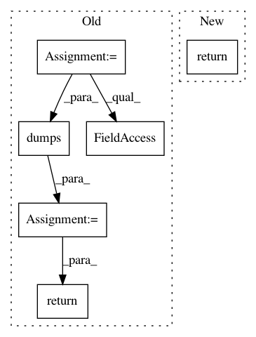

5cfa1934e4a2157d07ef534e1033a3f0e5bc1082,python/ray/experimental/client/server/server.py,RayletServicer,GetObject,#RayletServicer#Any#Any#,86
Before Change
def GetObject(self, request, context=None):
request_ref = cloudpickle.loads(request.handle)
if request_ref.binary() not in self.object_refs:
return ray_client_pb2.GetResponse(valid=False)
objectref = self.object_refs[request_ref.binary()]
logger.info("get: %s" % objectref)
try:
item = ray.get(objectref, timeout=request.timeout)
except Exception as e:
return_exception_in_context(e, context)
item_ser = cloudpickle.dumps(item)
return ray_client_pb2.GetResponse(valid=True, data=item_ser)
def PutObject(self, request, context=None) -> ray_client_pb2.PutResponse:
obj = cloudpickle.loads(request.data)
objectref = self._put_and_retain_obj(obj)
After Change
return ray_client_pb2.TerminateResponse(ok=True)
def GetObject(self, request, context=None):
return self._get_object(request, "", context)
def _get_object(self, request, client_id: str, context=None):
if request.id not in self.object_refs[client_id]:
return ray_client_pb2.GetResponse(valid=False)
In pattern: SUPERPATTERN
Frequency: 3
Non-data size: 6
Instances
Project Name: ray-project/ray
Commit Name: 5cfa1934e4a2157d07ef534e1033a3f0e5bc1082
Time: 2020-12-18
Author: me@barakmich.com
File Name: python/ray/experimental/client/server/server.py
Class Name: RayletServicer
Method Name: GetObject
Project Name: ray-project/ray
Commit Name: 5cfa1934e4a2157d07ef534e1033a3f0e5bc1082
Time: 2020-12-18
Author: me@barakmich.com
File Name: python/ray/experimental/client/server/server.py
Class Name: RayletServicer
Method Name: PutObject
Project Name: OpenMined/PySyft
Commit Name: afadb6b3193224c40ffb76496e1aa14567b3dcb4
Time: 2020-08-21
Author: 2017csb1092@iitrpr.ac.in
File Name: syft/grid/clients/data_centric_fl_client.py
Class Name: DataCentricFLClient
Method Name: simplify